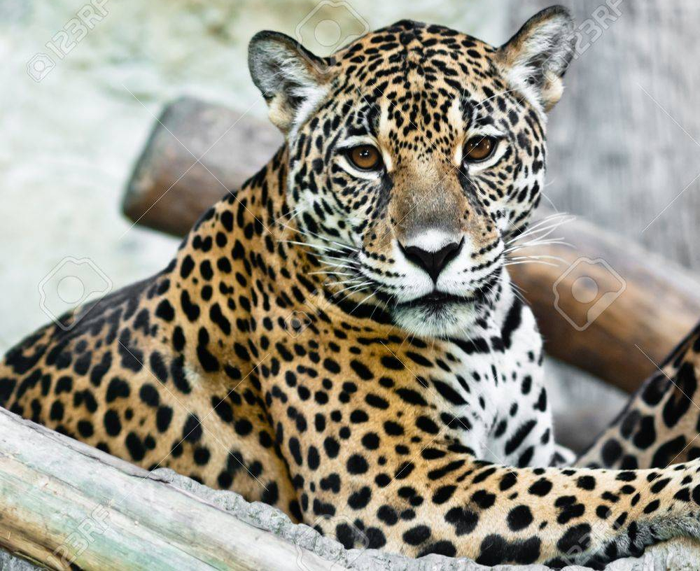

Snow leopards have black spots and rosettes of white and gray hair. The paint on the head is white with small black spots and larger rosette patterns on the back and tail. This cat has a thick coat and a short, stocky body that is well suited to cold environments.
Did you know, Snow leopards are the only big cats that call the cold deserts of Asia home.
click here to go back to home page.